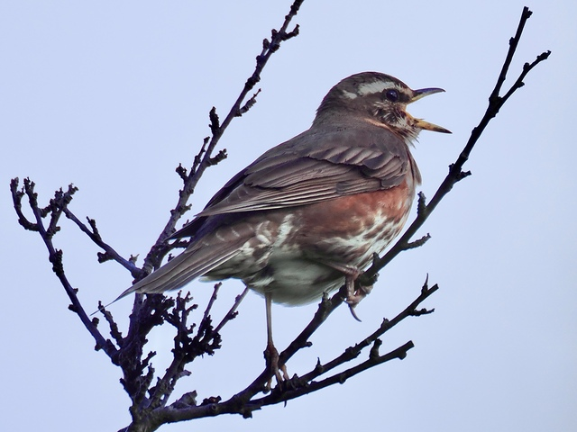

Redwing
Turdus iliacus
Order: Passeriformes
Family: Turdidae

A brown thrush, smaller than a blackbird. White supercilium, red flanks. Brown spots on pale belly. Is a winter visitor to the UK, mainly feeding on berries and are quite shy. In summer, returns to Scandinavia to breed, hence becoming bolder, often perching to sing. Note that this species has red flanks rather than actual red wings.